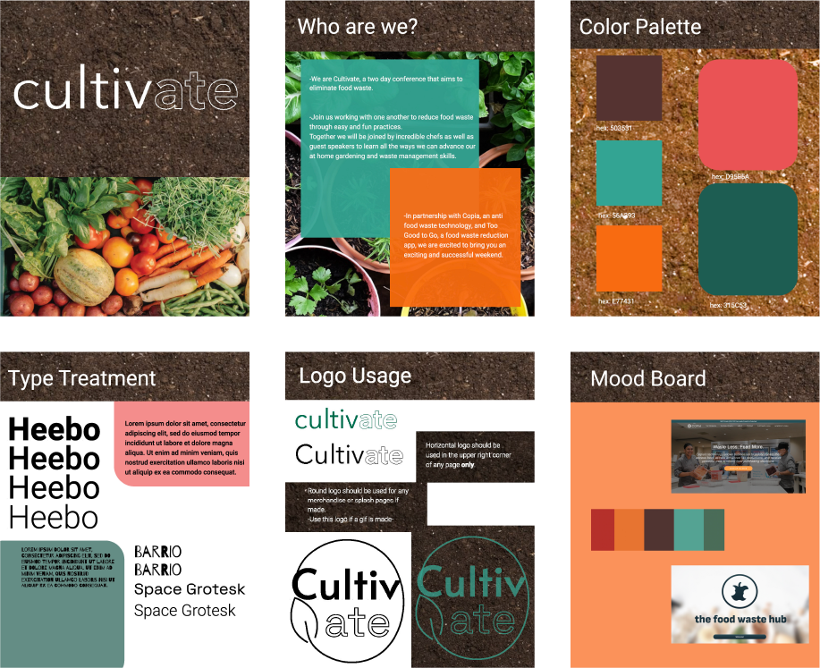

Cargo Site, 2024
Cultivate is a two-day conference event aiming to eliminate food waste. I made an event website with the web developing tool, CargoSite. Through this process I was able to create a thorough and complete understanding of my brand and brand identity. In addition to the website, I made a brand guide, Mood Board, and wireframe with Figma. I made merchandise items and custom tickets for the event. These included a custom tote/grocery bag with my logo and 2 inch pins with special guest Greta Thunberg.
